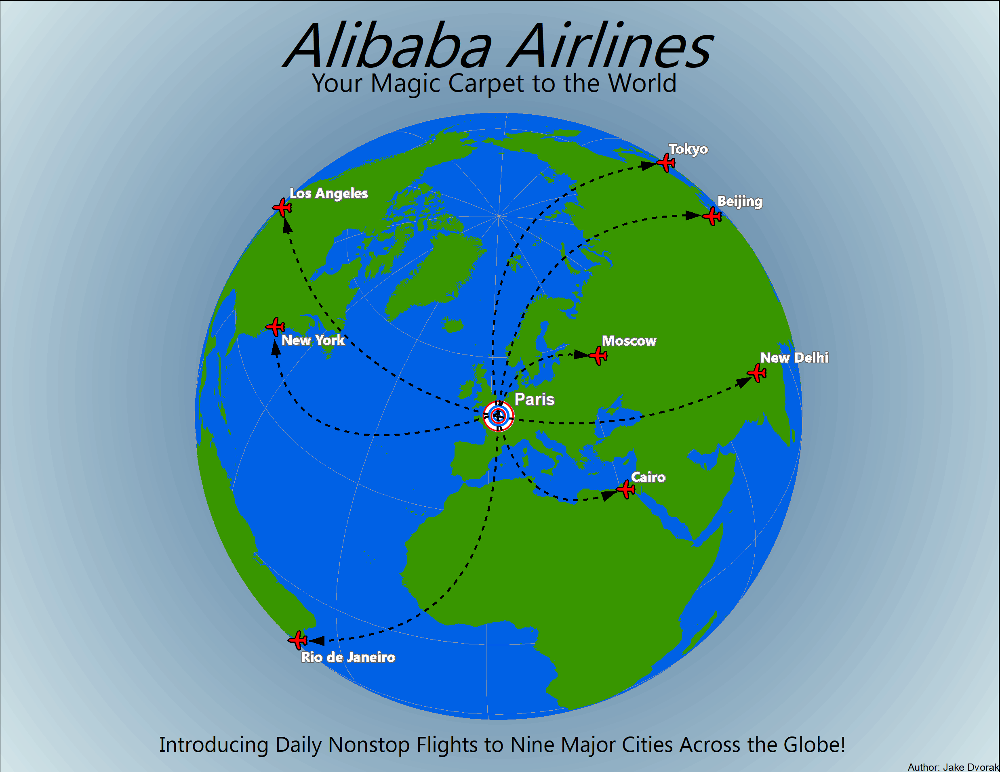

Depicting Mohonk Mountain House and the Mohonk Preserve, this TIN was created as an assignment for a remote sensing class I took at New Paltz. The purpose of the TIN was to practice creating mosaics, hillshades and TINs from LIDAR data. The area depicted was perfect for the assignment as it is a staple of the New Paltz area and an area that had a lot of varying terrain.

.png "Village of New Paltz Visitor Brochure")
This brochure was an assignment for a cartography class I took at New Paltz. We were tasked with creating a walking tour brochure for the Village of New Paltz, as the village is a highly trafficked tourist spot, along with its surrounding areas. On the tour, I included parts of the college campus, shopping areas, nature spots and some of my favorite restaurants. Creating this brochure allowed me to get more creative with my GIS work.

I created this environmental characteristics map while I worked as a teacher's assistant in an Intro to GIS class at New Paltz. The map depicts Ulster County, NY and features characteristics such as precipitation and temperature for the area, elevation, slope of the terrain and slope direction indicated by the south aspect inset and finally how much of the county's land is made up of forest. This environmental analysis taught me about DEMs and how to use the ArcGIS toolbox to build different visuals based on one set of raster data.

This mock airline poster was an assignment for a cartography class I took at New Paltz. The scenario surrounding the map was that we were to roleplay as cartographic consultants who were contacted by Alibaba Airlines to create an advertisement for them. This assignment taught me a lot about projections and symbology customization, which has helped me tremendously over the years.

Created in a GIS class I took at New Paltz, the geography of me map was one of my favorites from when I was still a beginner working with GIS. This project showcases my life geographically - places I've lived, where my parents were born, my commute to and from school, places I would like to visit, places I have visited and my ancestral roots. This map allowed me to explore using insets extensively.

Similar to the walking tour brochure, this map shows points of interest in Ulster County, NY. The county is filled by a hillshade, letting tourists know the terrain of the area, and other physical features like creeks and rivers are shown as well. The points of interest are in yellow, so the reader can easily find them. Almost every point is located in the heart of a different town, so that tourists can truly see what Ulster County has to offer.